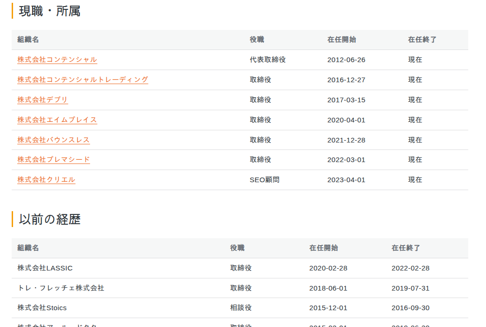

構造化データ (JSON-LD)
入力したプロフィール情報は、schema.org 準拠の JSON-LD としてプロフィールページに自動出力されます。Google リッチリザルトや AI 検索 (AI Overviews / Perplexity 等) が人物情報を正確に理解できるようになります。
出力される schema.org の型
ページ自体を表す ProfilePage と、人物を表す Person を中核に、入力した実績が以下の型としてマークアップされます。
| 入力した内容 | schema.org の型 / プロパティ |
|---|---|
| ページ全体 | ProfilePage |
| 人物 (氏名・肩書・自己紹介など) | Person |
| SNS・外部プロフィール | Person.sameAs |
| 現職・所属 | Person.worksFor (Organization) |
| 学歴 | Person.alumniOf (EducationalOrganization) |
| 資格・認定 | Person.hasCredential (EducationalOccupationalCredential) |
| 受賞・表彰 | Person.award |
| 専門分野・言語・スキル | Person.knowsAbout / knowsLanguage / skills |
| 書籍 | Person.owns (Book) |
| 学術論文 | Person.owns (ScholarlyArticle) |
| 特許 | Person.owns (CreativeWork) |
| 取材・執筆・監修 | Person.subjectOf (Article) |
| 講演・セミナー | Person.performerIn (Event) |
| パンくず | BreadcrumbList |
構造化データの設定
「設定」タブの 構造化データ (JSON-LD) セクションで、出力の有無や挙動を調整できます。

- JSON-LD を出力する — ProfilePage + Person の構造化データをフロントに自動出力します。
- 出力位置 — 通常は
wp_head(推奨)。テーマやキャッシュ系プラグインと head 出力が衝突する場合のみfooterを選びます。 - speakable プロパティを出力する — AI 音声読み上げ (LLMO) 向けに、見出しや概要を speakable として指定します。
- BreadcrumbList を自動出力する — 「ホーム → 個人名」を基本としたパンくず構造化データを出力します。プレフィックスのアーカイブページが実在する場合は、中間に「プロフィール」相当の階層も含めます。
フロントでの表示例
入力した経歴・実績は、構造化データと同時に読みやすいテーブルやリストとしてフロントにも表示されます。

出力の確認方法
プロフィールを公開したあと、その URL を Google リッチリザルトテスト に入力すると、出力された構造化データを検証できます。
リッチリザルトテストは構造 (文法) を検証するもので、内容の正しさ (タイトルと要旨が一致しているか等) は検証しません。入力内容そのものは公開前にご自身で確認してください。